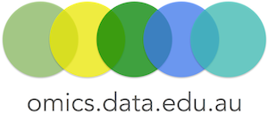

About
The Food and Health Flagship is an RDS-funded project to provide cloud-based data services and tools for Australian Life Science Researchers to combine, analyse and interpret genomic, transcriptomic, proteomic and metabolomic data. The data platform will incorporate the Bioplatforms Australia Antibiotic Resistant Pathogens Initiative (ABRPI).
Authors
 Anna Syme
Anna Syme
 Torsten Seemann
Torsten Seemann
 Simon Gladman
Simon Gladman
 Dieter Bulach
Dieter Bulach
 Xin-Yi Chua
Xin-Yi Chua
 Dominique Gorse
Dominique Gorse
Mike Thang
Support

These training materials have been used for:
McGill Summer Institute in Infectious Diseases and Global Health, June 2016, Montreal, Canada

Galaxy Community Conference 2016, Indiana, USA

CLIMB UK Launch: Cloud Infrastructure for Microbial Bioinformatics, 2016